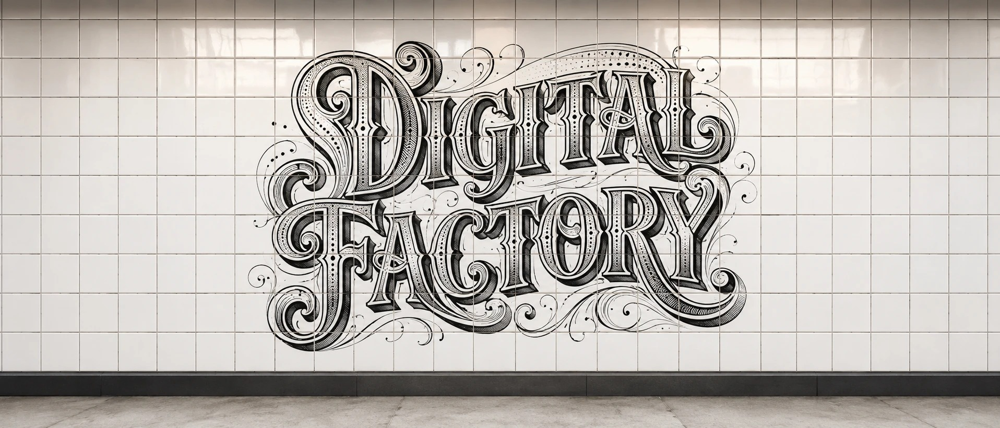

Digital Factory · Forem
Un parcours en quatre demi-journées pour découvrir l'impression 3D à travers des cas concrets du métier, suivi d'un exercice final : la fabrication d'une crédence, de l'écran au carreau.
Comment une machine fabrique un objet, ce qu'elle sait faire, ce qu'elle ne sait pas faire, et comment on lui parle.
½ journée 02Cette demi-journée sera ajoutée prochainement.
½ journée 03Cette demi-journée sera ajoutée prochainement.
½ journée 04Cette demi-journée sera ajoutée prochainement.
Exercice finalMets en pratique : compose, cadre et prépare les fichiers de fabrication d'une vraie crédence en carreaux.